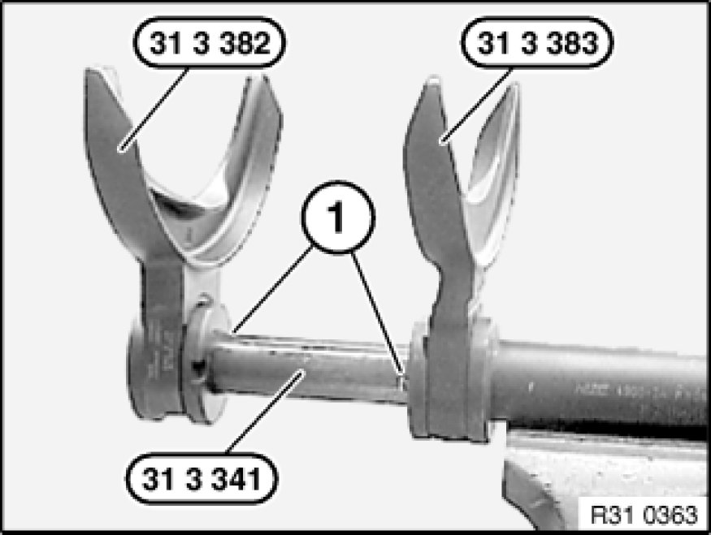
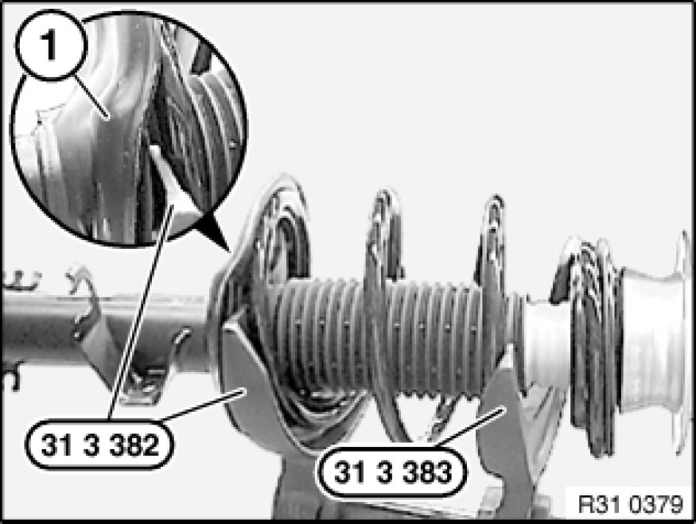
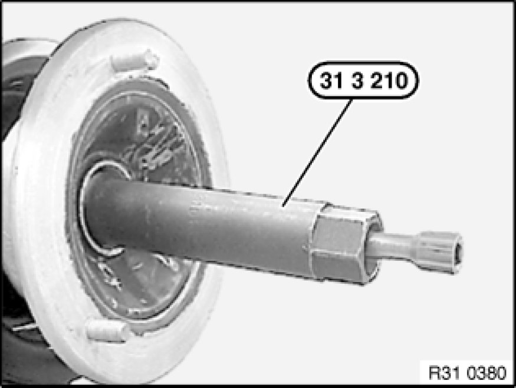
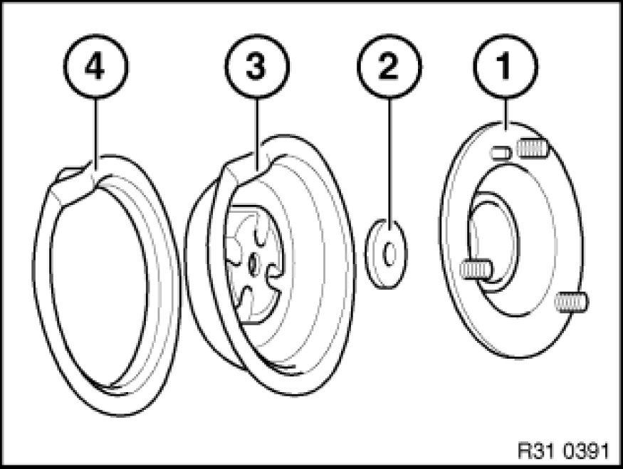
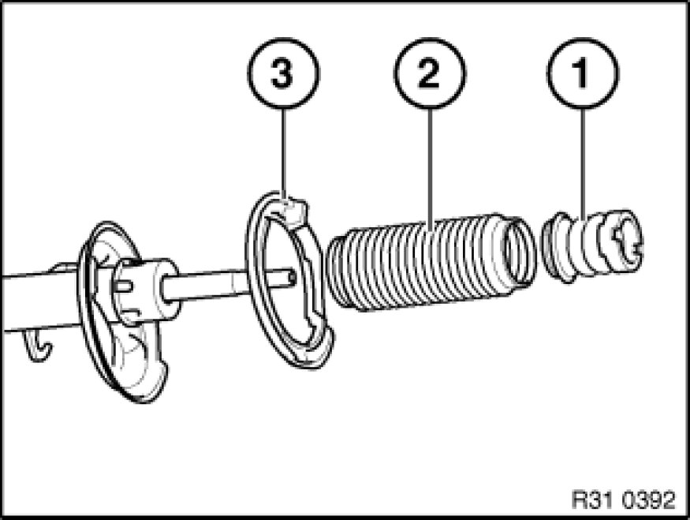
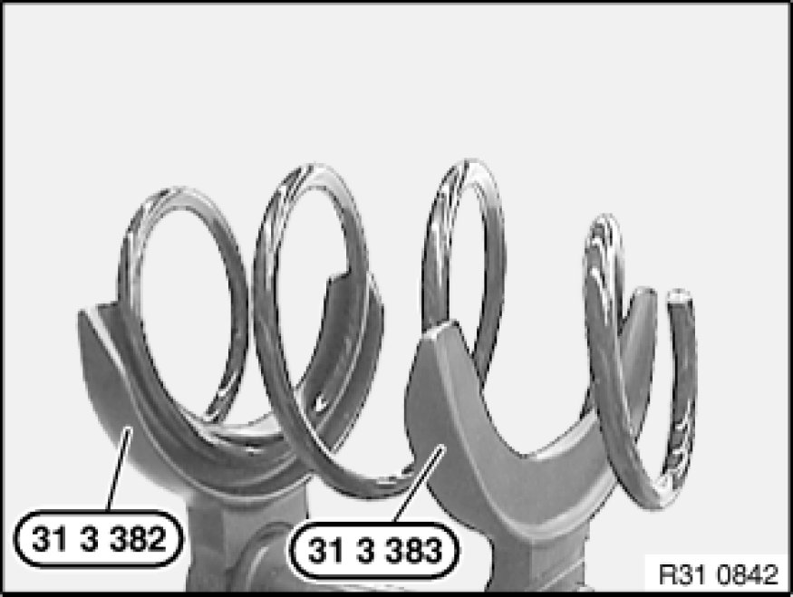
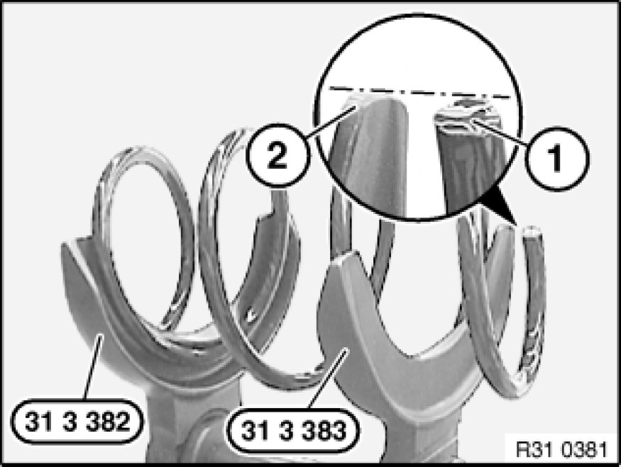
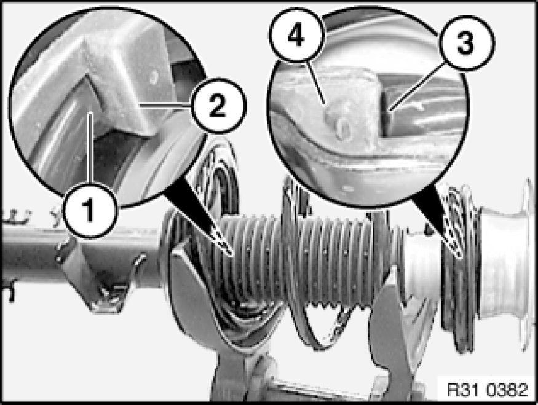

Replacing Front Left or Right Spring Strut Shock Absorber
31 31 031 - Replacing front left or right spring strut shock absorber

Special tools required:
- 31 3 210 31 3 210 Spanner
- 31 3 340 31 3 340 Spring Tensioner
- 31 3 341 31 3 340 Spring Tensioner
- 31 3 382 31 3 350 Spring Holder
- 31 3 383 31 3 350 Spring Holder

Warning!
Prior to each use of the special tool 31 3 340 31 3 340 Spring Tensioner, it is essential to read the associated Owner's Handbook fully!
All the safety precautions and instructions contained in the Owner's Handbook must be strictly observed!
Failure to observe these safety precautions and instructions increases the risk of serious physical injury, damage to your health and damage to property and equipment!

Important!
1. Prior to each use, check the special tools for defects, modifications and operational reliability.
2. Damaged/modified special tools must not be used!
3. No changes or modifications may be made to the special tools!
4. These special tools are intended solely for the purpose of tightening and relieving cylindrical and tapered suspension springs.
5. Keep special tools dry, clean and (down to the spindle) free from grease.
6. Impact screwdrivers are prohibited!
7. Do not compress coil spring to full extent.

Necessary preliminary tasks:
- Remove front spring strut Removing and Installing Complete Left or Right Spring Strut Shock Absorber

Removing:
Clamp special tool 31 3 341 31 3 340 Spring Tensioner in vice.
Fit special tools 31 3 382 31 3 350 Spring Holder and 31 3 383 31 3 350 Spring Holder from above on special tool 31 3 341 31 3 340 Spring Tensioner until locking pins (1) can be felt and heard to snap into place.
Check seating of special tools 31 3 382 31 3 350 Spring Holder and 31 3 383 31 3 350 Spring Holder, correct if necessary.

Clean coil spring to remove coarse contamination and take up with special tools 31 3 382 31 3 350 Spring Holder and 31 3 383 31 3 350 Spring Holder.
Turn spring strut until special tool 31 3 382 31 3 350 Spring Holder rests in indentation (1) of spring strut.
Warning!
Coils of coil spring must be located completely in recess of special tools 31 3 382 31 3 350 Spring Holder and 31 3 383 31 3 350 Spring Holder!
Compress coil spring until stress on piston rod is relieved.

Remove cap.
Release nut with special tool 31 3 210 31 3 210 Spanner (grip piston rod in the process).

Remove support bearing (1), dust sleeve and shim (2).
Remove spring plate (3) with spring pad (4).
Remove shock absorber with auxiliary damper, gaiter and lower spring pad sideways from tensioned coil spring.

If necessary, remove auxiliary damper (1), gaiter (2) and spring pad (3) from shock absorber.

Relieve tension on coil spring.
Remove coil spring from special tools 31 3 382 31 3 350 Spring Holder and 31 3 383 31 3 350 Spring Holder.

Assembly:
Accommodate coil spring with special tools 31 3 382 31 3 350 Spring Holder and 31 3 383 31 3 350 Spring Holder.
Twist coil spring until lower end of coil spring (1) is flush with end (2) of special tool 31 3 383 31 3 350 Spring Holder.
Warning!
Do not compress coil spring to full extent.
Coils of coil spring must be located completely in recess of special tools 31 3 382 31 3 350 Spring Holder and 31 3 383 31 3 350 Spring Holder!
Tension coil spring.
Check auxiliary damper (1), gaiter (2) and spring pad (3) for damage, replace if necessary.
Insert shock absorber in tensioned coil spring.
Note:
Align spring pad (3) by way of recess to spring plate.
Check support bearing (1) and spring pad (4) for damage, replace if necessary.
Attach spring plate (3) with spring pad (4) to piston rod.
Attach shim (2) and support bearing (1) with dust protection sleeve to piston rod.
Replace nut and tighten down with special tool 31 3 210 31 3 210 Spanner (grip piston rod in the process).
Tightening torque 31 31 2AZ Spring Struts (Front).
Fit cover cap.

Important!
Lower end of coil spring (1) must rest on stop (2) of spring pad!
Upper end of coil spring (3) must rest on stop (4) of spring pad!
Relieve tension on coil spring.
Check installation position of gaiter, correct fold if necessary.
After installation:
- Carry out wheel alignment check if a spring strut with support bearing was or has been installed without centering pin.